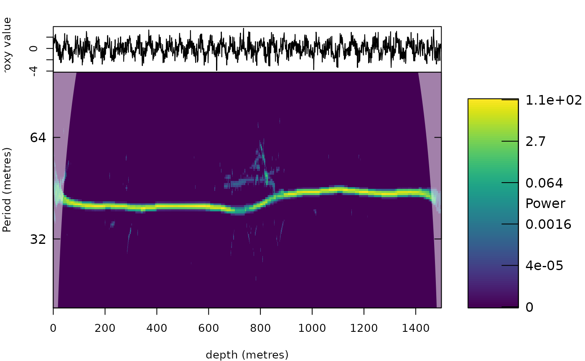

Superlet synchrosqueezing: consensus of synchrosqueezed transforms with short and long wavelets
Source:R/analyse_superlet_sst.R, R/zzz_aliases_american.R
analyse_superlet_sst.RdCombines the idea of superlets (Moca et al. 2021) with synchrosqueezing. A short wavelet
(few cycles) follows fast changes of the period, for instance where the sedimentation rate changes, but
smears the energy over a broad range of periods; a long wavelet (many cycles) separates close periods but
blurs changes along the record. Superlets combine a set of wavelets with an increasing number of cycles by the
geometric mean of their amplitudes, which keeps the energy only where all of them agree. Here the wavelet
transforms are first synchrosqueezed (first or second order, see analyse_wavelet_sst), slightly
smoothed along the period axis, and then combined by the geometric mean. A cycle that is present in the
record is found by every order at (nearly) the same period and survives; noise is squeezed to different,
random periods by the different orders and is strongly suppressed; ridges of the long wavelets that lag behind a
change of the period are removed by the short wavelets and vice versa. This gives sharp ridges that follow
changes of the sedimentation rate and separate close cycles in noisy records.
The defaults (orders with omega_0 = 8, 12 and 16, second-order synchrosqueezing with 4 iterations of the reassignment, smoothing of 0.01 octave) gave the most concentrated and best separated ridges in synthetic tests with eccentricity-modulated precession, obliquity, changing sedimentation rates and red noise (see NEWS).
Usage
analyse_superlet_sst(
data = NULL,
lowerPeriod = 2,
upperPeriod = 1024,
dj = 1/100,
c1 = 4,
o = 5,
mult = TRUE,
omega_nr = c(8, 12, 16),
wavelet = "morlet0",
wavelet_order = NULL,
sst_order = 2,
n_iter = 4,
threshold = "riskshrink",
smooth = 0.01,
combine = c("geometric", "min", "mean"),
verbose = FALSE
)
analyze_superlet_sst(
data = NULL,
lowerPeriod = 2,
upperPeriod = 1024,
dj = 1/100,
c1 = 4,
o = 5,
mult = TRUE,
omega_nr = c(8, 12, 16),
wavelet = "morlet0",
wavelet_order = NULL,
sst_order = 2,
n_iter = 4,
threshold = "riskshrink",
smooth = 0.01,
combine = c("geometric", "min", "mean"),
verbose = FALSE
)Arguments
- data
Input record: a matrix or data frame with depth/time in column 1 and the proxy value in column 2 (further columns are ignored). Incomplete rows are removed, the rows are sorted by depth/time, the record is linearly interpolated to the median sampling interval and standardised. Required (
Default=NULLgives an error).- lowerPeriod, upperPeriod
Shortest and longest period of the transform, in the same unit as the depth/time column of
data(numeric, 0 <lowerPeriod<upperPeriod;lowerPeriodat least twice the sampling interval). Defaults:lowerPeriod:Default=2;upperPeriod:Default=1024.- dj
Spacing of the period axis in octaves (numeric, > 0;
1/xgives x periods per doubling of the period).Default=1/100.- c1
Base number of cycles of the superlet-style orders (numeric, > 0); only used when
omega_nr=NULL. Cycles are converted to omega_0 = 2 pi cycles / 5, as inanalyse_superlet.Default=4.- o
Number of orders of the superlet-style definition (integer, >= 1); only used when
omega_nr=NULL. Order i hasi * c1cycles (mult=TRUE) orc1 + i - 1cycles (mult=FALSE).Default=5.- mult
Multiplicative (
TRUE) or additive (FALSE) growth of the number of cycles with the order (logical); only used whenomega_nr=NULL.Default=TRUE.- omega_nr
Central angular frequencies omega_0 (Morlet-equivalent number of cycles) of the orders that are combined (numeric vector, values > 0, e.g.
c(8, 12, 16)); each value gives one synchrosqueezed transform. Set toNULLto define the orders withc1,oandmultinstead.Default=c(8, 12, 16).- wavelet, wavelet_order
Mother wavelet (character string or function) and its parameter(s) (numeric or
NULL), seeanalyse_wavelet; the wavelet must be analytic (real wavelets give an error). The default"morlet0"is the exactly zero-mean Morlet wavelet, which stays admissible for few cycles. The orders of other wavelets get the same relative bandwidth as the Morlet wavelet with the same number of cycles.wavelet:Default="morlet0";wavelet_order:Default=NULL.- sst_order
Order of the synchrosqueezing of every order (numeric,
1or2), seeanalyse_wavelet_sst;2follows fast changes of the period better.Default=2.- n_iter
Number of iterations of the frequency reassignment (multisynchrosqueezing) of every order (integer, >= 1), see
analyse_wavelet_sst.Default=4.- threshold
Noise threshold of the synchrosqueezing:
"riskshrink","none"or a number (numeric, in standard deviations of the standardised record), seeanalyse_wavelet_sst.Default="riskshrink".- smooth
Standard deviation, in octaves, of the Gaussian smoothing along the period axis applied to every order before the orders are combined (numeric, >= 0; 0 switches it off). It absorbs the small differences in the period estimated by the different orders.
Default=0.01.- combine
How the squeezed amplitudes of the orders are combined (character), one of
"geometric"(geometric mean, as in superlets),"min"(minimum: strictest consensus) or"mean"(arithmetic mean: least suppression of noise).Default="geometric"(the first element ofc("geometric", "min", "mean")).- verbose
Print a message when each order is done (logical, TRUE or FALSE).
Default=FALSE.
Value
A list of class analyze.wavelet (see analyse_wavelet_sst) that can be plotted with
plot_wavelet and used by the tracking functions, with the extra elements superlet = TRUE,
omega_nr_all (omega_0 of every order) and Power_orders (the squeezed power of every order, a list).
References
Moca, V.V., Barzan, H., Nagy-Dabacan, A., Muresan, R.C., 2021. Time-frequency super-resolution with superlets. Nature Communications 12, 337.
Daubechies, I., Lu, J., Wu, H.-T., 2011. Synchrosqueezed wavelet transforms: an empirical mode decomposition-like tool. Applied and Computational Harmonic Analysis 30, 243-261.
Oberlin, T., Meignen, S., Perrier, V., 2015. Second-order synchrosqueezing transform or invertible reassignment? Towards ideal time-frequency representations. IEEE Transactions on Signal Processing 63, 1335-1344.
Examples
# \donttest{
z <- 0:1499
x <- ifelse(z < 750, sin(2 * pi * z / 40), sin(2 * pi * z / 44)) + rnorm(length(z), sd = 1)
s <- analyse_superlet_sst(data.frame(z, x), lowerPeriod = 20, upperPeriod = 100, dj = 1 / 50)
plot_wavelet(s)

# }